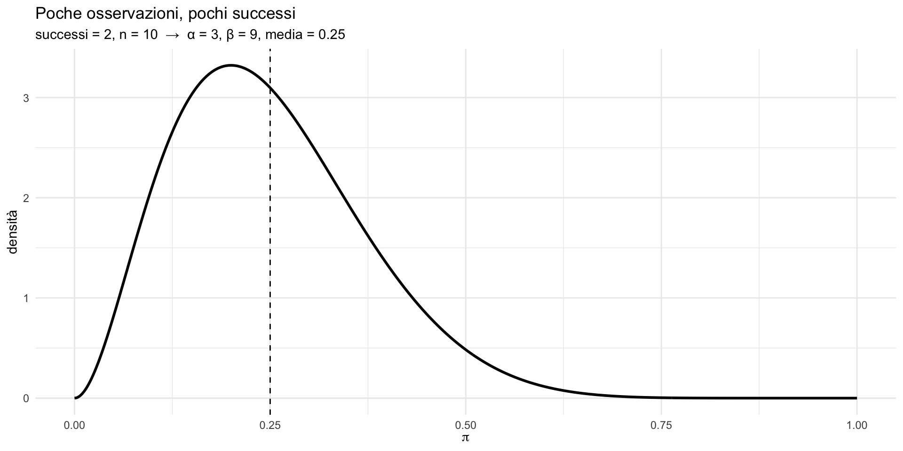
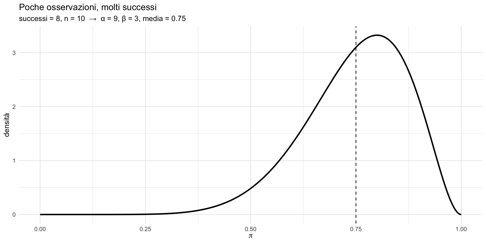
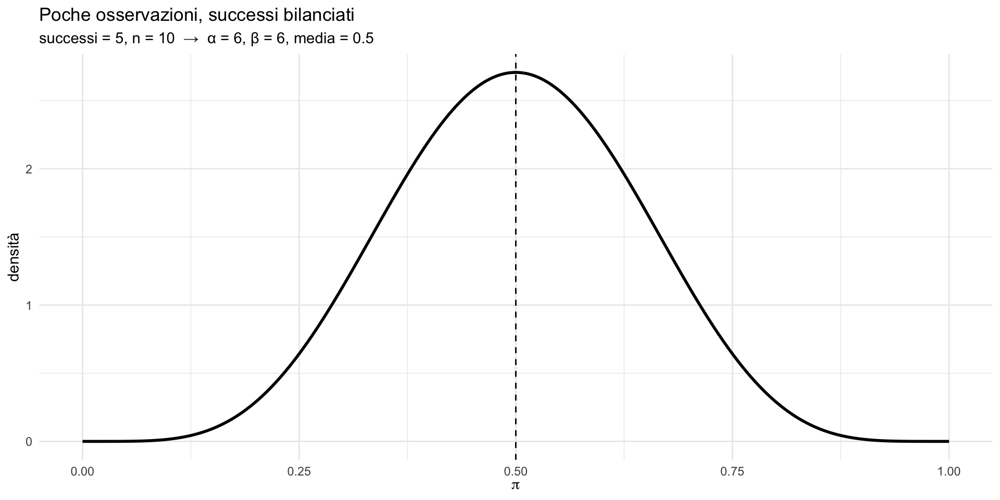
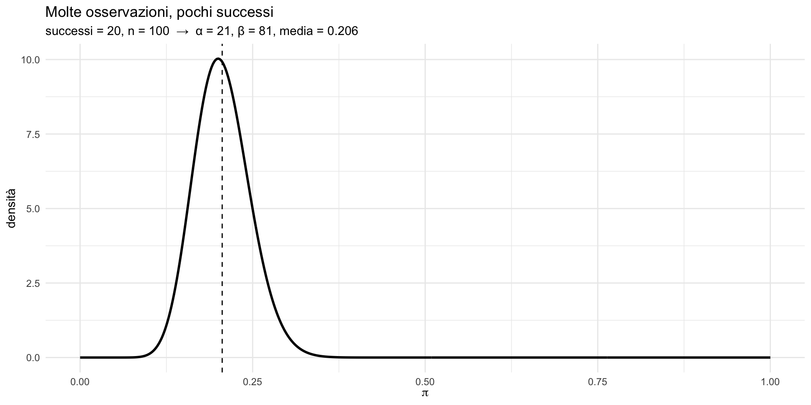
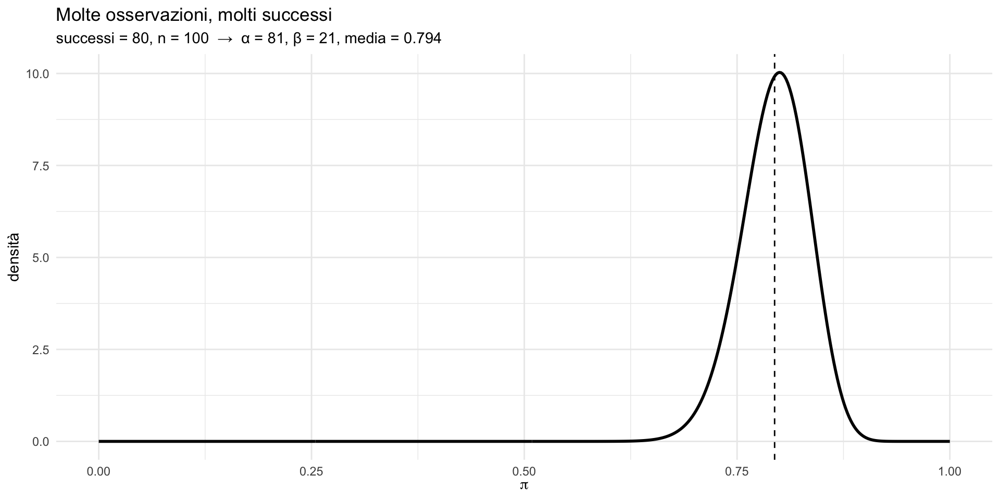
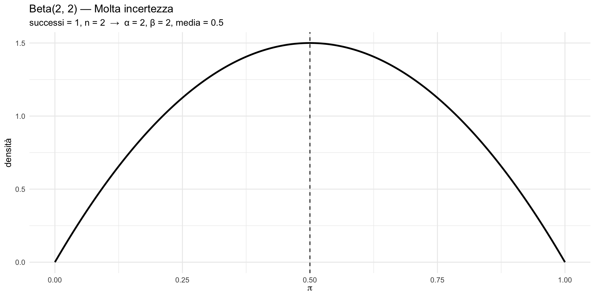
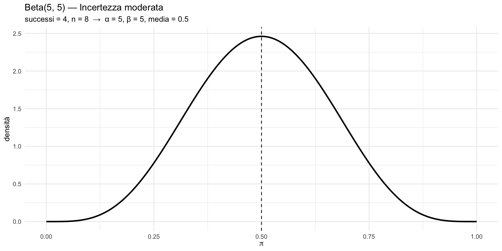
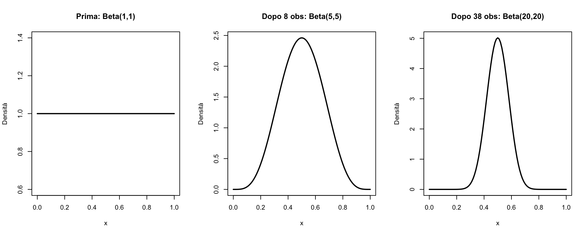

![]()
[1] 0.02659615[1] 0.8413447[1] 124.6728La distribuzione Beta e l’uso di R
29 ottobre 2026
Immaginate di aver trattato 12 pazienti con un nuovo protocollo per il disturbo d’ansia sociale. Di questi, 9 sono migliorati in maniera “clinicamente rilevante” e 3 no.
Un collega vi chiede:
“Qual è la probabilità che questa terapia funzioni?”
Non potete rispondere con un singolo numero (“il 75%”) — questo ignorerebbe l’incertezza. Con solo 12 pazienti, la vostra stima è rumorosa: la vera efficacia potrebbe essere molto diversa da 9/12.
Vi serve una distribuzione che rappresenti tutto ciò che sapete — e tutto ciò che non sapete — sulla probabilità di successo.
Questa distribuzione è la Beta.
In questa seconda parte:
La distribuzione Beta è una distribuzione continua definita sull’intervallo \([0, 1]\).
Viene usata per modellare:
In psicologia, ogni volta che vi chiedete “qual è la probabilità che un trattamento funzioni?” o “qual è la proporzione di pazienti che risponde positivamente?”, state ragionando su una quantità che la Beta può descrivere.
In un’ottica bayesiana, la Beta non descrive i dati: descrive le nostre credenze sulla probabilità di successo.
La distribuzione Beta è una mappa di credibilità sui possibili valori di una probabilità.
Se \(\pi \sim \text{Beta}(\alpha,\beta)\), la densità è:
\[ f(\pi) = \frac{\Gamma(\alpha + \beta)}{\Gamma(\alpha)\Gamma(\beta)} \pi^{\alpha-1}(1-\pi)^{\beta-1} \] dove \(\Gamma\) è la funzione gamma (generalizzazione del fattoriale).
👉 Non è importante saperla usare a mano. È importante capire che ruolo giocano \(\alpha\) e \(\beta\).
I parametri \(\alpha\) e \(\beta\) possono essere interpretati come:
Tornando al nostro esempio: 9 miglioramenti e 3 non-miglioramenti → \(\alpha = 10\), \(\beta = 4\).
La distribuzione Beta codifica direttamente l’esperienza clinica in una forma matematica.
\[ \mathbb{E}(\pi) = \frac{\alpha}{\alpha + \beta}. \]
Per il nostro esempio: \(\frac{10}{10+4} \approx 0.71\) — vicino a 9/12 = 0.75, ma “tirato” leggermente verso 0.5 dall’incertezza iniziale.
La Beta assume forme molto diverse al variare dei parametri:
| \(\alpha\) | \(\beta\) | Forma |
|---|---|---|
| 1 | 1 | Uniforme |
| 2 | 2 | Campana simmetrica |
| 5 | 2 | Asimmetrica a destra |
| 2 | 5 | Asimmetrica a sinistra |
| 0.5 | 0.5 | A U (estremi più probabili) |
Interpretiamo:
disegniamo la densità Beta;
evidenziamo la media con una linea verticale.

Distribuzione spostata verso lo 0, molto asimmetrica, incertezza elevata.

Stessa numerosità del caso precedente, ma la massa si sposta verso 1.

Media ≈ 0.5, ma distribuzione ancora larga → pochi dati = molta incertezza.

Stessa proporzione del caso 1 (≈ 0.2), ma distribuzione molto più concentrata.

Stessa proporzione del caso 2 (≈ 0.8), ma evidenza molto più forte.
Confrontate gli Esempi 1 e 4: entrambi hanno una proporzione di successi del 20%.
Ma la distribuzione Beta dell’Esempio 4 (100 osservazioni) è molto più stretta di quella dell’Esempio 1 (10 osservazioni).
Questo cattura un’intuizione fondamentale: la stessa proporzione osservata è più informativa quando proviene da più dati. Un 2/10 e un 20/100 suggeriscono la stessa proporzione, ma la nostra certezza è molto diversa.
Questa è la differenza tra dire “un paio di pazienti sono migliorati” e “nel nostro studio con 100 partecipanti, il 20% è migliorato”.
Stessa proporzione, certezza radicalmente diversa.
La Beta cattura questa differenza in modo naturale.
La media della Beta è sempre: \[ \mathbb{E}(\pi) = \frac{\alpha}{\alpha+\beta} \]
Il numero totale di osservazioni controlla:
Il numero di successi controlla:
Più dati → meno incertezza.
Beta(1, 1): totale incertezza — tutti i valori tra 0 e 1 sono ugualmente plausibili. È il punto di partenza prima di raccogliere qualsiasi dato.
Beta(10, 4): dopo aver osservato 9 successi e 3 insuccessi, crediamo che la probabilità di successo sia alta (media ≈ 0.71). Questo è esattamente il caso del terapeuta con 12 pazienti.
Beta(3, 7): dopo 2 successi e 6 insuccessi, crediamo che la probabilità sia bassa (media ≈ 0.30). Un trattamento che merita cautela.
Bayesian inference is about reallocating credibility across parameter values.
Le distribuzioni sono mappe delle nostre credenze, non fotografie della realtà.
Ricordate il teorema di Bayes dalla lezione 6?
\[ P(H \mid E) = \frac{P(E \mid H) P(H)}{P(E)}. \]
La distribuzione Beta gioca un ruolo centrale:
Bayesian inference is about reallocating credibility across parameter values.
La Beta è il linguaggio matematico con cui faremo questa riallocazione.
Uno psicologo studia l’efficacia di una terapia. Prima di raccogliere dati, crede che la probabilità di miglioramento sia “attorno al 50%”, ma è incerto.
Domanda: quale distribuzione Beta rappresenta questa credenza iniziale?
Una credenza centrata su 0.5 con incertezza moderata può essere rappresentata da:
Beta(2, 2) o Beta(5, 5)


La Beta(2, 2) dice: “penso sia circa 0.5, ma non ne sono affatto sicuro”.
La Beta(5, 5) dice: “penso sia circa 0.5, e ho qualche ragione per crederlo”.
La scelta tra le due dipende da quanta informazione pregressa avete.
A differenza della Normale, non esistono tavole standard per la Beta.
Ma non è un problema: usiamo R.
Questo è il grande vantaggio del software: possiamo lavorare con qualsiasi distribuzione, non solo quelle “tabulabili”.
R usa una convenzione sistematica per tutte le distribuzioni:
| Prefisso | Significato | Esempio (Normale) |
|---|---|---|
d |
densità | dnorm(x, mean, sd) |
p |
probabilità cumulata | pnorm(x, mean, sd) |
q |
quantile | qnorm(p, mean, sd) |
r |
random (simulazione) | rnorm(n, mean, sd) |
Problema: QI ~ \(\mathcal{N}(100, 15)\). Trovare \(P(X > 130)\).
[1] 0.02275013[1] 0.02275013R conferma: circa il 2.3% ha QI > 130.
Problema: tempi di risposta ~ \(\mathcal{N}(350, 40)\). Trovare \(P(310 < X < 390)\).
[1] 0.6826895R conferma: circa il 68.3% dei tempi cade nell’intervallo.
Problema: test d’ansia ~ \(\mathcal{N}(50, 10)\). Quale punteggio separa il 10% più alto?
R conferma: il punteggio soglia è circa 62.8.
Problema: Screening per la depressione ~ \(\mathcal{N}(25, 8)\).
Problema: test cognitivo ~ \(\mathcal{N}(100, 15)\). Intervallo per il 95% centrale.
[1] 70.60054 129.39946L’intervallo è [70.6, 129.4].
Torniamo al caso presentato all’inizio. Un terapeuta ha trattato 12 pazienti con un protocollo per l’ansia sociale: 9 sono migliorati, 3 no.
La sua credenza sulla probabilità di miglioramento segue una Beta(10, 4) (9+1 successi, 3+1 insuccessi).
Domanda a) Qual è la probabilità stimata di miglioramento (media)?
Domanda b) Con quale probabilità il tasso di successo supera 0.70?
[1] 0.7142857[1] 0.5793944C’è circa il 58% di probabilità che il vero tasso di successo superi 0.70.
Significato clinico: se un collega vi chiede “puoi dirmi con sicurezza che questa terapia funziona per almeno il 70% dei pazienti?”, la risposta onesta è “c’è circa una probabilità su due”. Servono più dati.
Due psicologi discutono di una nuova terapia prima di iniziare uno studio:
Domanda: per ciascuno, qual è la probabilità che il tasso di successo sia > 0.50?
[1] 0.01953125[1] 0.9804688Le credenze iniziali influenzano fortemente le conclusioni.
Questo è il punto cruciale: con dati sufficienti, le credenze di Anna e Bruno convergeranno. L’inferenza bayesiana non elimina la soggettività, ma la quantifica e permette ai dati di prevalere su di essa.
Se entrambi osservano 40 successi su 50 pazienti, le loro posterior saranno molto simili — indipendentemente dal punto di partenza. Questa è la forza del metodo bayesiano: l’evidenza empirica alla fine domina.
Vedremo questo meccanismo in dettaglio nelle prossime lezioni.
Un’indagine rileva che 15 partecipanti su 20 preferiscono un certo stimolo.
Domanda:
assumendo una Beta(16, 6) come distribuzione a posteriori, trova l’intervallo che contiene il 90% centrale della credenza.
[1] 0.5630237 0.8675518Con il 90% di probabilità, la vera preferenza è tra 0.58 e 0.91.
Interpretazione: questo intervallo è l’analogo bayesiano dell’intervallo di confidenza, ma con un’interpretazione più diretta — possiamo dire letteralmente:
“c’è il 90% di probabilità che il vero valore stia in questo intervallo”.
Questa è l’interpretazione che la maggior parte delle persone crede di dare agli intervalli di confidenza frequentisti, ma che tecnicamente non è corretta in quel framework.
Un test di memoria viene somministrato a 50 soggetti. 35 superano la soglia critica.
La distribuzione a posteriori è Beta(36, 16).
Quale affermazione è più supportata dai dati?
[1] 0.921117[1] 0.03678715[1] 0.566918L’affermazione A è la più supportata (≈ 90%).
Con la distribuzione Beta e R, potete rispondere a qualsiasi domanda sulla plausibilità di un valore per una proporzione — non siete più vincolati a un singolo “sì/no”.
La visualizzazione aiuta a capire la distribuzione prima di fare calcoli.
| Operazione | Con le tavole | Con R |
|---|---|---|
| Standardizzare | Necessario | Non necessario |
| Limiti di precisione | Sì (2 decimali) | No |
| Distribuzioni disponibili | Solo Normale, t, χ² | Tutte |
| Velocità | Lenta | Immediata |
| Errori di lettura | Possibili | Impossibili |
Concetto fondamentale per l’inferenza bayesiana
La curva di densità rappresenta il nostro grado di credenza su dove si trova il vero valore del parametro.

Con più dati, la nostra incertezza si riduce. Questo è l’apprendimento bayesiano in azione.
In queste lezioni sulla probabilità abbiamo costruito un percorso coerente:
Lezione 5 — Il linguaggio: eventi, spazi campionari, assiomi.
Lezione 6 — L’aggiornamento: probabilità condizionata e teorema di Bayes.
Lezione 8 — I modelli per conteggi: Bernoulli, Binomiale, Poisson.
Lezione 9 (oggi) — I modelli per misure continue: Normale e Beta.
Ora avete tutti gli strumenti per il passo successivo: l’inferenza bayesiana — usare i dati per aggiornare le nostre credenze sui parametri in modo formale e rigoroso.
Per la Normale:
Per la Beta:
p, q, d, r + nome distribuzione.La pratica con R è essenziale per il resto del corso.
La tavola riporta \(\Phi(z) = P(Z \leq z)\) per \(z \geq 0\).
| \(z\) | 0.00 | 0.01 | 0.02 | 0.03 | 0.04 | 0.05 | 0.06 |
|---|---|---|---|---|---|---|---|
| 0.0 | .5000 | .5040 | .5080 | .5120 | .5160 | .5199 | .5239 |
| 0.5 | .6915 | .6950 | .6985 | .7019 | .7054 | .7088 | .7123 |
| 1.0 | .8413 | .8438 | .8461 | .8485 | .8508 | .8531 | .8554 |
| 1.5 | .9332 | .9345 | .9357 | .9370 | .9382 | .9394 | .9406 |
| 2.0 | .9772 | .9778 | .9783 | .9788 | .9793 | .9798 | .9803 |
Per \(z < 0\): usare \(P(Z \leq -z) = 1 - P(Z \leq z)\)